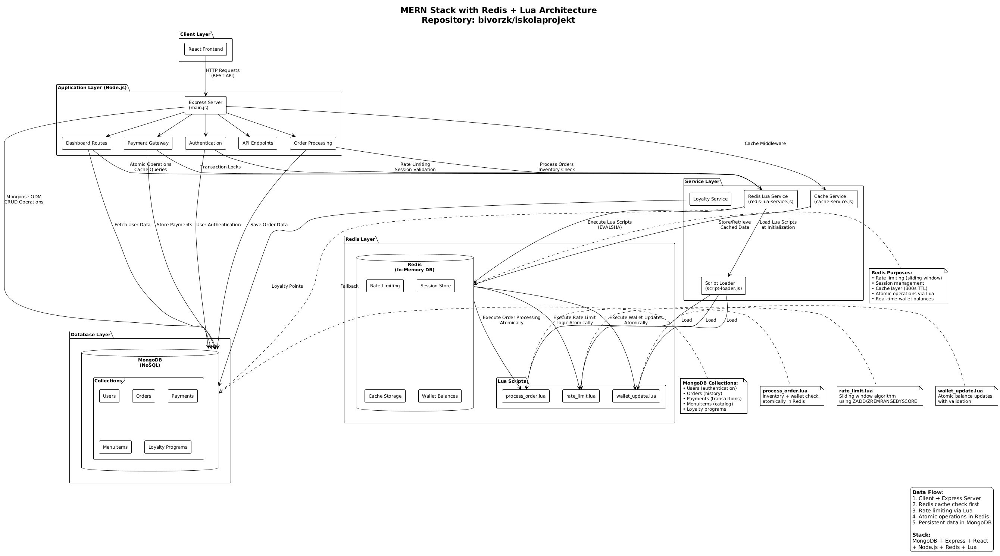
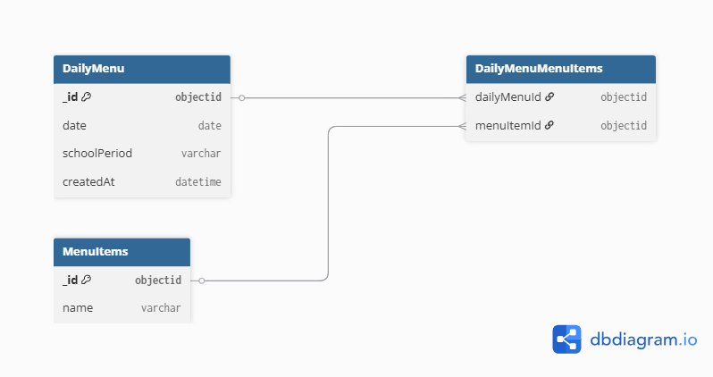
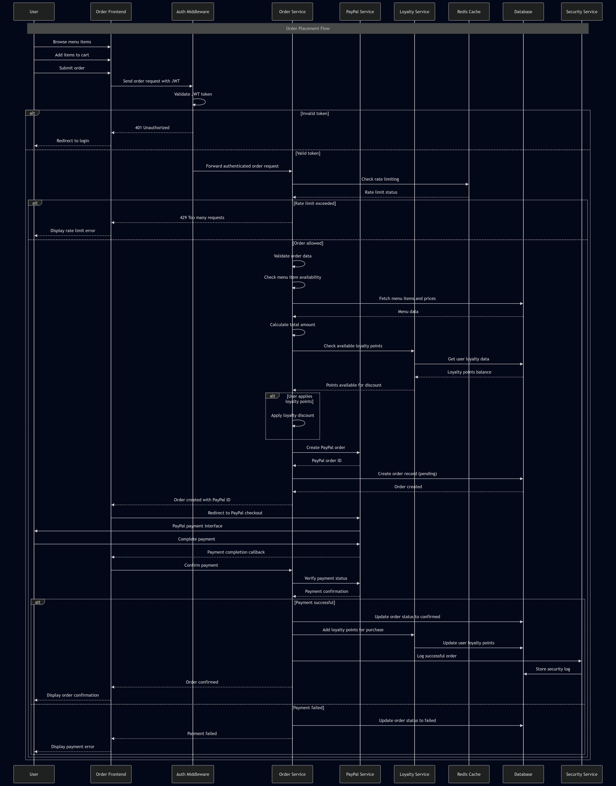

A SnapTray egy webalapú menza-rendelőrendszer, amelynek célja, hogy egyszerűsítse az étkezési rendelések lebonyolítását iskolai környezetben. Fő célja, hogy a diákok, szülők és az étkeztető személyzet közötti interakció gyorsabbá és átláthatóbbá váljon az online rendelés, a valós idejű rendeléskövetés és a biztonságos fizetési lehetőségek révén.
A rendszer három fő felhasználói szerepet szolgál ki. A diákok böngészhetnek az étlapok között, rendelhetnek, kezelhetik a virtuális pénztárcájukat, és nyomon követhetik tranzakcióikat. A szülők figyelemmel kísérhetik gyermekeik rendeléseit, kezelhetik a fizetéseket és követhetik a költéseiket. Az adminisztrátorok számára dashboard biztosít lehetőséget az étlapok kezelésére, a rendelések nyomon követésére és statisztikák elemzésére.
A SnapTray modern biztonsági megoldásokat alkalmaz, beleértve a kétlépcsős azonosítást, az email-ellenőrzést, valamint a gyakori webes támadások elleni védelmet. A fizetési lehetőségek PayPal és Google Pay integráción keresztül biztosítottak, így a tranzakciók gyorsak és biztonságosak.
Az intuitív felhasználói felület, a megbízható háttérrendszer és a hatékony adatkezelés révén a SnapTray javítja a menzai élményt minden felhasználó számára, növelve a kényelmet, az átláthatóságot és az üzemeltetési hatékonyságot.
A rendszer egy webalapú rendelési és fizetési platform oktatási intézmények
számára. Célja, hogy a diákok biztonságosan tudjanak rendeléseket leadni,
a szülők felügyelhessék a költéseket, az adminisztrátorok pedig kezelhessék
a teljes rendszert.
Az alkalmazás kliens–szerver architektúrát követ. A backend Node.js alapú Express szerver,
a frontend React komponensekből épül fel szerepkör-alapú dashboardokkal. A rendszer Redis-t használ
gyorsítótárazásra, rate limitingre és Lua scriptek segítségével atomi műveletekhez. MongoDB
adatbázis biztosítja az adatok perzisztens tárolását.
Felhasználókezelés és autentikáció:
Rendelés és menü rendszer:
Fizetés feldolgozás:
Felhasználókezelés
Hitelesítés és biztonság
Rendelések és fizetések
Adminisztráció
A rendszer három fő rétegből áll:

The SnapTray system is organized into several key subsystems that work together to provide a cohesive cafeteria management solution:
Data flows through the SnapTray system in a structured manner to ensure security, performance, and consistency:
This flow ensures that sensitive operations are atomic, cached data remains consistent, and the system can handle concurrent users efficiently.
The technology stack for SnapTray was chosen to balance development speed, performance, scalability, and maintainability:
The architecture follows a monolithic approach rather than microservices due to the project's scope and team size, allowing for simpler deployment, debugging, and data consistency. Horizontal scaling is achieved through MongoDB sharding and Redis clustering when needed.
The SnapTray system follows several key design principles to ensure a robust, scalable, and user-friendly school cafeteria management solution. These principles guide the architecture, implementation, and maintenance of the system.
Ez az adatbázis egy iskolai büfék rendszer (MERN stack projekt) részét képezi, amely lehetővé teszi a felhasználók (diákok, szülők, tanárok) számára az étkezés megrendelését, kifizetését és értékelését. A rendszer támogatja a felhasználói autentikációt, a menükezelést, rendeléseket, kifizetéseket, hűségprogramokat, E2EE chatet és biztonsági naplózást. A fő cél az iskolai étkezés hatékony és biztonságos kezelése, beleértve a készletkezelést, értékeléseket és a pénzügyi tranzakciókat. Az adatbázis MongoDB-t használ Mongoose ODM-mel, amely egy NoSQL adatbázis, de sémákkal strukturált. Redis-t használ gyorsítótárazáshoz és ideiglenes adatokhoz.
Az adatbázis-modell típusa: NoSQL (MongoDB), lekérdezési nyelv: JavaScript (Mongoose queries). Redis in-memory adatbázis gyorsítótárazáshoz és session/ephemerális adatokhoz.
A rendszer fő entitásai és kapcsolataik:
Kapcsolatok:

Ez a tábla önálló, nem kapcsolódik más entitáshoz, csak eszköz-azonosítókat és titkosított adatokat tárol. Ez teljesen rendben van, mivel ephemerális, session típusú adatokat kezel.
A rendszer egyik legösszetettebb és legnagyobb része a végpontok közötti titkosított (E2EE) chat funkció, amely több adatbázis-entitást is érint. Az üzenetküldés a Double Ratchet protokollra és X3DH kulcscserére épül, így minden üzenet és kulcsmozgás külön dokumentumként jelenik meg a MongoDB-ben. A főbb komponensek:
A chat rendszer minden komponense úgy van kialakítva, hogy a szerver ne férjen hozzá a titkosított tartalomhoz, csak a szükséges metaadatokat tárolja. Az üzenetek, kulcsok és session-ök közötti kapcsolatok referenciákon (ObjectId) és eszközazonosítókon alapulnak. A Message kollekció indexei optimalizálják a keresést felhasználó, eszköz és státusz szerint. A PreKey és StorageBlob kollekciók magas churn-t kezelnek, mivel a kulcsok és session-ök gyorsan cserélődnek. Ez a felépítés biztosítja a biztonságos, skálázható és auditálható chat-funkciót az iskolai rendszerben.
The SnapTray system employs various algorithms and data structures to ensure efficient data processing, security, and performance. This section documents the key algorithms and data structures used throughout the system.
Redis Lua scripts are used for atomic operations that require multiple Redis commands to execute as a single, uninterruptible transaction. This ensures data consistency in high-concurrency scenarios.
Key Lua Scripts in the System:
Rate Limiting Script (rate_limit.lua):
-- Sliding window rate limiting using Redis sorted sets
local key = KEYS[1]
local window = tonumber(ARGV[1])
local max_requests = tonumber(ARGV[2])
local now = tonumber(ARGV[3])
-- Remove old entries outside the window
redis.call('ZREMRANGEBYSCORE', key, 0, now - window)
-- Count current requests in window
local current_count = redis.call('ZCARD', key)
-- Check if limit exceeded
if current_count >= max_requests then
return {0, current_count} -- 0 = blocked, current count
end
-- Add current request
redis.call('ZADD', key, now, now)
-- Set expiration on the key (cleanup)
redis.call('EXPIRE', key, window)
return {1, current_count + 1} -- 1 = allowed, new count
Wallet Update Script (wallet_update.lua):
-- Atomic wallet balance updates with validation
local wallet_key = KEYS[1]
local amount = tonumber(ARGV[1])
local current_balance = tonumber(redis.call('GET', wallet_key) or '0')
local new_balance = current_balance + amount
if new_balance < 0 then
return redis.error_reply('INSUFFICIENT_FUNDS')
end
redis.call('SET', wallet_key, new_balance)
return new_balance
Order Processing Script (process_order.lua):
-- Atomic order processing with inventory and wallet validation
local inventory_key = KEYS[1]
local wallet_key = KEYS[2]
local order_key = KEYS[3]
local quantity = tonumber(ARGV[1])
local price = tonumber(ARGV[2])
local user_id = ARGV[3]
-- Check inventory
local current_stock = tonumber(redis.call('GET', inventory_key) or '0')
if current_stock < quantity then
return redis.error_reply('INSUFFICIENT_STOCK')
end
-- Check wallet balance
local current_balance = tonumber(redis.call('GET', wallet_key) or '0')
local total_cost = quantity * price
if current_balance < total_cost then
return redis.error_reply('INSUFFICIENT_FUNDS')
end
-- Atomic operations: deduct inventory and balance, create order
redis.call('DECRBY', inventory_key, quantity)
redis.call('DECRBY', wallet_key, total_cost)
redis.call('HMSET', order_key, 'user_id', user_id, 'quantity', quantity, 'total_cost', total_cost)
return {current_stock - quantity, current_balance - total_cost, order_key}
Lua Script Benefits:
Password Hashing Algorithm:
// bcrypt with salt rounds for secure password storage
const hashedPassword = await bcrypt.hash(password, 12);
const isValid = await bcrypt.compare(password, hashedPassword);
JWT Token Generation and Verification:
// HS256 algorithm for token signing
const token = jwt.sign(payload, secretKey, { expiresIn: '24h' });
const decoded = jwt.verify(token, secretKey);
IP Hashing for Privacy:
// SHA-256 hashing for GDPR compliance
const hashedIP = crypto.createHash('sha256').update(ipAddress).digest('hex');
Currency Conversion Algorithm:
// Simple multiplication-based conversion
const convertCurrency = (amount, fromRate, toRate) => {
return (amount / fromRate) * toRate;
};
Payment Validation Algorithm:
// Multi-step validation with checksums
const validatePayment = (paymentData) => {
return validateAmount(paymentData.amount) &&
validateCurrency(paymentData.currency) &&
validateChecksum(paymentData);
};
Point Calculation Based on Purchase Amount:
const calculatePoints = (amount, tier, healthLevel, date) => {
const basePoints = amount * 4; // 4 points per dollar
const tierMultiplier = getTierMultiplier(tier);
const healthBonus = healthLevel === 'HIGH' ? 1.5 : 1.0;
const holidayBonus = isHoliday(date) ? 1.2 : 1.0;
return Math.floor(basePoints * tierMultiplier * healthBonus * holidayBonus);
};
Tier Determination Algorithm:
const determineTier = (totalPoints) => {
if (totalPoints >= 20000) return 'PLATINUM';
if (totalPoints >= 8000) return 'GOLD';
if (totalPoints >= 2500) return 'SILVER';
if (totalPoints >= 1200) return 'BRONZE';
return 'NONE';
};
Menu Item Filtering Algorithm:
const filterMenuItems = (items, filters) => {
return items.filter(item => {
return (!filters.category || item.category === filters.category) &&
(!filters.priceRange || isInRange(item.price, filters.priceRange)) &&
(!filters.allergens || !hasAllergens(item, filters.allergens)) &&
(!filters.searchTerm || matchesSearch(item, filters.searchTerm));
});
};
Text Search Algorithm:
const matchesSearch = (item, term) => {
const searchTerm = term.toLowerCase();
return item.name.toLowerCase().includes(searchTerm) ||
item.description.toLowerCase().includes(searchTerm);
};
Cache Key Generation:
const generateCacheKey = (userId, resource, params) => {
return `${userId}:${resource}:${JSON.stringify(params)}`;
};
Cache Invalidation Strategy:
const invalidateUserCache = async (userId) => {
const pattern = `${userId}:*`;
const keys = await redisClient.keys(pattern);
if (keys.length > 0) {
await redisClient.del(keys);
}
};
Sliding Window Algorithm (Redis Lua Implementation):
-- Uses Redis sorted sets for precise sliding window rate limiting
local key = KEYS[1]
local window = tonumber(ARGV[1])
local max_requests = tonumber(ARGV[2])
local now = tonumber(ARGV[3])
-- Remove requests outside the current window
redis.call('ZREMRANGEBYSCORE', key, 0, now - window)
-- Count requests in current window
local current_count = redis.call('ZCARD', key)
if current_count >= max_requests then
return {0, current_count} -- Rate limit exceeded
end
-- Add current request and set expiration
redis.call('ZADD', key, now, now)
redis.call('EXPIRE', key, window)
return {1, current_count + 1} -- Request allowed
- **Algorithm**: Token bucket with fixed window
- **Purpose**: Prevent abuse and ensure fair resource usage
- **Storage**: Redis-backed for distributed rate limiting
##### 5.3.2.7 Data Validation Algorithms
**Input Sanitization Algorithm:**
```javascript
const sanitizeInput = (input) => {
return input
.trim()
.replace(/[<>]/g, '') // Basic XSS prevention
.substring(0, 1000); // Length limiting
};
Email Validation Algorithm:
const validateEmail = (email) => {
const emailRegex = /^[^\s@]+@[^\s@]+\.[^\s@]+$/;
return emailRegex.test(email) && email.length <= 254;
};
Index Utilization:
// Compound indexes for common query patterns
User.collection.createIndex({ email: 1, isVerified: 1 });
Order.collection.createIndex({ userId: 1, orderDate: -1 });
Cursor-based Pagination:
const getPaginatedResults = async (model, filter, page, limit) => {
const skip = (page - 1) * limit;
const results = await model.find(filter)
.sort({ createdAt: -1 })
.skip(skip)
.limit(limit);
const total = await model.countDocuments(filter);
return { results, total, page, pages: Math.ceil(total / limit) };
};
Order Fulfillment Batch Processing:
const processOrderBatch = async (orders) => {
const bulkOps = orders.map(order => ({
updateOne: {
filter: { _id: order._id },
update: { status: 'Completed' }
}
}));
return await Order.bulkWrite(bulkOps);
};
Score-based Assessment:
const verifyRecaptcha = async (token) => {
const response = await fetch('https://www.google.com/recaptcha/api/siteverify', {
method: 'POST',
body: new URLSearchParams({
secret: process.env.RECAPTCHA_SECRET,
response: token
})
});
const result = await response.json();
return result.score >= 0.5; // Threshold for human/bot determination
};
The algorithms are chosen to balance security, performance, maintainability, and user experience while adhering to industry best practices and compliance requirements.
├── code_analytics.json
├── package.json
├── postcss.config.js
├── readme.md
├── tailwind.config.js
├── todo.md
├── config/
│ ├── DATABASE_CONSTANTS.JS
│ ├── database_queries.js
│ └── hu.json
├── data/
│ ├── disposable_email_list.json
│ ├── Most_used_passwords.json
│ ├── password_characters.json
│ └── database_test/
│ ├── Food_Items.json
│ └── menu_items.json
├── docs/
│ ├── a.md
│ ├── DatabaseDoc.md
│ ├── Documentation.html
│ ├── Documentation.md
│ ├── E2EE_Chat_README.md
│ ├── Paypal_TestDetails.txt
│ ├── sourcefor_security_checks.txt
│ └── TODO.md
├── public/
│ ├── googlepay.js
│ ├── index.html
│ ├── password_reset.html
│ ├── pay.html
│ ├── paypal.js
│ ├── register.html
│ ├── verify.html
│ ├── 404/
│ │ ├── 404.html
│ │ └── 404.jsx
│ ├── 429/
│ │ ├── 429.html
│ │ └── 429.jsx
│ ├── chat/
│ │ ├── chat-styles.css
│ │ ├── chat.jsx
│ │ ├── index.html
│ │ ├── api/
│ │ ├── components/
│ │ ├── config/
│ │ └── utils/
│ ├── css/
│ │ └── mobile-enhancements.css
│ ├── dashboard/
│ │ ├── TODO.txt
│ │ ├── admin/
│ │ ├── editor/
│ │ ├── parent/
│ │ └── student/
│ ├── home_page/
│ │ ├── home_page.html
│ │ └── home_page.jsx
│ ├── information/
│ │ ├── index.html
│ │ └── information.jsx
│ ├── js/
│ │ ├── e2ee-crypto.js
│ │ └── mobile-utils.js
│ ├── no_perm/
│ │ ├── index.html
│ │ └── no_perm.jsx
│ └── Order/
│ ├── Cart.jsx
│ ├── Header.jsx
│ ├── index.html
│ ├── LoyaltyStatus.jsx
│ ├── MenuItem.jsx
│ ├── MobileCart.jsx
│ ├── MobileToast.jsx
│ ├── notifications.js
│ ├── order.jsx
│ ├── paymentHandlers.js
│ ├── useCart.js
│ └── useMobileCart.js
├── src/
│ ├── api.js
│ ├── database.js
│ ├── logout.js
│ ├── main.js
│ ├── redis-lua.js
│ ├── redis.js
│ ├── Register.jsx
│ ├── script-loader.js
│ ├── verificationStore.js
│ ├── auth/
│ │ ├── 2fa.js
│ │ ├── email_verification.js
│ │ ├── index.js
│ │ ├── login.js
│ │ ├── middleware.js
│ │ ├── password_reset.js
│ │ ├── passwordhash.js
│ │ ├── register.js
│ │ │ ├── security.js
│ │ └── validation.js
│ ├── cache/
│ │ ├── ChangeStreamManager.js
│ │ └── KeyRegistry.js
│ ├── dashboard/
│ │ ├── dashboard.js
│ │ ├── admin/
│ │ ├── editor/
│ │ ├── middleware/
│ │ ├── parent/
│ │ ├── services/
│ │ ├── statistics/
│ │ └── student/
│ ├── examples/
│ │ └── lua-demo.js
│ ├── locationRiskAnalyzer/
│ │ └── locationRiskAnalyzer.js
│ ├── LoyaltySystem/
│ │ └── loyalty-service.js
│ ├── middleware/
│ │ └── ...
│ ├── models/
│ │ └── ...
│ ├── Orders/
│ ├── payments/
│ ├── scripts/
│ └── services/
└── tests/
├── code_analytic.py
├── code_analytics.json
├── creating_test_users.js
├── database_testing.js
├── fake_data.py
├── menu_items.json
├── Paypal_TestConfig.txt
├── query_security_logs.js
├── register_testing.py
├── seed_rewards.js
└── performance_tests/
The SnapTray backend is built for scalability, security, and maintainability. The main technologies are:
src/models/).Example: Express app setup and initialization (src/main.js)
const express = require('express');
const app = express();
// Trust proxy for correct IP extraction
app.set('trust proxy', 1);
const rateLimit = require('express-rate-limit');
const session = require('express-session');
const database = require('./database');
const path = require('path');
const emailverification = require('./auth/email_verification');
const api = require('./api');
const { RedisStore } = require('rate-limit-redis');
const favicon = require('serve-favicon');
const googlepayRouter = require('./payments/googlepay');
const paypalRouter = require('./payments/paypal');
const password_reset = require('./auth/password_reset');
const database_queries = require('../config/database_queries');
const TwoFA = require('./auth/2fa');
const dashboardRouter = require('./dashboard/dashboard');
const logoutRouter = require('./logout');
const Order = require('./Orders/Order');
const redisLuaService = require('./services/redis-lua-service');
const chatService = require('./services/chat-service');
const geosecurityService = require('./services/Geosecurity-service');
const cors = require('cors');
const { startChangeStreams, stopChangeStreams } = require('./dashboard/services/cache-service');
const {Server} = require('socket.io');
require('dotenv').config({ path: path.join(__dirname, '../.env') });
const port = process.env.PORT;
let redisAvailable = false;
const { redisClient, isRedisAvailable } = require('./redis');
redisClient.on('connect', async () => {
console.log('Redis connected in main.js');
redisAvailable = true;
// Initialize Redis Lua service
try {
await redisLuaService.initialize();
} catch (error) {
console.error('Failed to initialize Redis Lua service:', error);
}
});
// Start MongoDB change streams once the connection is open
Example registration route (src/auth/register.js):
router.post('/register', async (req, res) => {
try {
const { username, password, email } = req.body;
const clientIp = req.clientIp || req.ip || 'unknown';
// Rate limiting
if (isRedisAvailable) {
const rateLimitKey = `reg_attempts:${clientIp}`;
const attempts = await redisClient.get(rateLimitKey);
const attemptCount = attempts ? parseInt(attempts) : 0;
if (attemptCount >= 5) {
return res.status(429).send('Too many registration attempts. Please try again later.');
}
await redisClient.setEx(rateLimitKey, 3600, (attemptCount + 1).toString());
}
// reCAPTCHA verification
const captchaResponse = req.body['g-recaptcha-response'];
const captchaResult = await verifyCaptcha(captchaResponse, secretKey);
if (!captchaResult.success) {
return res.status(400).json({ error: captchaResult.error, details: captchaResult.details });
}
// Validation
const usernameError = validateUsername(username, password);
if (usernameError) return res.status(400).send(usernameError);
const passwordError = validatePassword(password);
if (passwordError) return res.status(400).send(passwordError);
const emailError = validateEmail(email);
if (emailError) return res.status(400).send(emailError);
// Check existing users
const existingUser = await User.findOne({ username });
const existingEmail = await User.findOne({ email });
let shouldCreateUser = !existingUser && !existingEmail;
let shouldSendEmail = shouldCreateUser || (existingEmail && !existingEmail.isVerified);
// Send verification email
if (shouldSendEmail) {
const verificationCode = crypto.randomBytes(3).toString('hex').toUpperCase();
await setVerificationCode(email, verificationCode);
await sendVerificationEmail.sendVerificationEmail(email, verificationCode);
}
// Create user if not exists
if (shouldCreateUser) {
const hashedPassword = await bcrypt.hash(password, 10);
const user = new User({ username, password: hashedPassword, email });
await user.save();
await createSecurityLog('USER_REGISTER', { username, email }, clientIp);
}
res.status(200).json({ message: 'Registration successful! Please check your email for verification.' });
} catch (error) {
console.error('Registration error:', error);
res.status(500).send('Internal server error');
}
});
Example PayPal order creation (src/api.js):
router.post('/orders', async (req, res) => {
// ...validate user, stock...
const { jsonResponse, httpStatusCode } = await paypalService.createOrder(cart, currency, amount);
// ...save order to DB...
res.status(httpStatusCode).json(jsonResponse);
});
Example cache middleware (src/dashboard/services/cache-service.js):
function cacheResult(cacheKey, ttl = 300) {
return async (req, res, next) => {
if (!isRedisAvailable()) return next();
const key = typeof cacheKey === 'function' ? cacheKey(req) : cacheKey;
const cached = await redisClient.get(key);
if (cached) return res.status(200).json(JSON.parse(cached));
const originalJson = res.json;
res.json = function(data) {
redisClient.setEx(key, ttl, JSON.stringify(data));
return originalJson.call(this, data);
};
next();
};
}
Example (src/LoyaltySystem/loyalty-service.js):
function ConvertPoints(dollarAmount, tier, healthLevel, date) {
let total = 0;
for (let i = 0; i < Math.floor(dollarAmount); i++) {
total += Math.floor(Math.random() * 6) + 4; // 4-9 points per dollar
}
if (isHoliday(date)) total *= 1.5;
else if (isHolidaySeason(date)) total *= 1.2;
total *= 1 + (healthLevel * 0.2);
const tierBonus = DISCOUNT_RATES[tier] || 0;
total *= 1 + tierBonus;
return Math.floor(total);
}
Example Lua script (used via redis-lua-service):
-- KEYS[1]: rate_limit_key
-- ARGV[1]: window_size_seconds, ARGV[2]: max_requests, ARGV[3]: current_timestamp
local key = KEYS[1]
local window = tonumber(ARGV[1])
local max_requests = tonumber(ARGV[2])
local now = tonumber(ARGV[3])
redis.call('ZREMRANGEBYSCORE', key, 0, now - window)
local current_count = redis.call('ZCARD', key)
if current_count >= max_requests then
return {0, current_count}
end
redis.call('ZADD', key, now, now)
redis.call('EXPIRE', key, window)
return {1, current_count + 1}
The SnapTray backend is designed with extensibility and maintainability as core principles, ensuring the system can evolve with changing requirements while remaining easy to understand, modify, and scale. This section details the architectural decisions, patterns, and practices that support long-term software sustainability.
The backend follows a modular architecture that separates concerns into distinct layers and modules, promoting high cohesion within modules and loose coupling between them. This design allows for independent development, testing, and deployment of components.
Layered Architecture: The system is organized into presentation (routes), business logic (services), data access (models), and infrastructure (middleware, utilities) layers. This separation enables changes in one layer without affecting others.
Module Organization: Code is structured into logical modules (e.g., src/auth/, src/dashboard/, src/services/, src/payments/), each responsible for a specific domain. This organization facilitates:
Service-Oriented Design: Business logic is encapsulated in service modules (e.g., loyalty-service.js, paypal-service.js), which provide clean APIs for controllers. This abstraction allows for:
Example service structure (src/services/order-service.js):
class OrderService {
async validateOrderStock(cart) {
// Validate inventory levels
for (const item of cart) {
const menuItem = await MenuItems.findById(item.id);
if (!menuItem || menuItem.stock < item.quantity) {
throw new Error(`Insufficient stock for ${menuItem.name}`);
}
}
}
async convertCartToDbFormat(cart) {
// Convert frontend cart format to database format
const dbOrderItems = [];
let totalAmount = 0;
for (const item of cart) {
const menuItem = await MenuItems.findById(item.id);
dbOrderItems.push({
menuItem: item.id,
quantity: item.quantity,
price: menuItem.price
});
totalAmount += menuItem.price * item.quantity;
}
return { dbOrderItems, totalAmount };
}
async createOrderRecord(userId, dbOrderItems, totalAmount, paypalOrderId) {
// Create order record in database
const newOrder = new Order({
user: userId,
items: dbOrderItems,
totalAmount,
paypalOrderId,
status: 'pending'
});
return await newOrder.save();
}
}
module.exports = new OrderService();
The system uses environment-based configuration to support multiple deployment environments (development, staging, production) without code changes.
Environment Variables: Sensitive data (database credentials, API keys, JWT secrets) are stored in environment variables, loaded via dotenv. This approach:
Configuration Modules: Centralized configuration in modules like config/database_queries.js and config/DATABASE_CONSTANTS.JS allows for easy tuning of system parameters.
Example environment configuration:
// .env file structure
MONGODB_URI=example
DB_NAME=example
PORT=300 // example port
# Recaptcha configuration {#recaptcha-configuration }
Client_Side_Captha=example
Server_Side_Captha=example
SENDGRID_API_KEY=SG.example.com
# Email configuration {#email-configuration }
EMAIL_USER=example@example.com
EMAIL_PASS=examplePassword1;
SMTP_HOST=example
SMTP_PORT=464 // example
PAYPAL_CLIENT_ID=example
PAYPAL_CLIENT_SECRET=example
IP_HASH_SECRET=examplehash
JWT_SECRET=examplehash
JWT_EMAIL_SECRET=examplehash
JWT_LOGIN_SECRET=examplehash
SESSION_SECRET=examplehash
ARTILLERY_API_KEY=examplehash
REDIS_HOST=127.0.0.1:6379 //example
GEOIP=exampleAPI_key
Comprehensive error handling ensures system stability and provides meaningful feedback to users and developers.
Centralized Error Handling: Express error middleware catches and processes errors uniformly, logging details while exposing safe messages to clients.
Graceful Degradation: The system continues operating even when non-critical components fail (e.g., Redis unavailability falls back to database-only operations).
Retry Mechanisms: Critical operations (e.g., payment processing) include retry logic with exponential backoff.
Example error handling middleware:
// src/middleware/errorHandler.js
const errorHandler = (err, req, res, next) => {
console.error('Error:', err);
// Log security-related errors
if (err.name === 'ValidationError' || err.name === 'CastError') {
createSecurityLog('VALIDATION_ERROR', { error: err.message, path: req.path }, req.ip);
}
// Determine error response
let statusCode = 500;
let message = 'Internal server error';
if (err.name === 'ValidationError') {
statusCode = 400;
message = 'Invalid input data';
} else if (err.message.includes('Insufficient stock')) {
statusCode = 409;
message = err.message;
}
res.status(statusCode).json({
error: message,
timestamp: new Date().toISOString()
});
};
module.exports = errorHandler;
Comprehensive logging supports debugging, auditing, and monitoring system health.
Structured Logging: All critical operations are logged with consistent formats, including user actions, errors, and performance metrics.
Security Logging: Sensitive operations (authentication, payments) are logged to the SecurityLogs collection for audit trails.
Performance Monitoring: Response times and error rates are tracked to identify bottlenecks.
Example logging in authentication:
// src/auth/login.js
const loginAttempt = await User.findOne({ username });
if (!loginAttempt) {
await createSecurityLog('LOGIN_FAILED', { username, reason: 'User not found' }, clientIp);
return res.status(401).json({ error: 'Invalid credentials' });
}
// Successful login
await createSecurityLog('LOGIN_SUCCESS', { userId: loginAttempt._id, username }, clientIp);
The system includes automated testing to ensure reliability and facilitate maintenance.
Unit Testing: Individual functions and modules are tested in isolation using Jest or Mocha.
Integration Testing: API endpoints and database interactions are tested end-to-end.
Security Testing: Automated tests validate authentication flows, input sanitization, and rate limiting.
Performance Testing: Load testing with Artillery ensures the system handles expected traffic.
Example unit test (tests/auth.test.js):
const request = require('supertest');
const app = require('../src/main');
describe('Authentication', () => {
test('should register a new user', async () => {
const response = await request(app)
.post('/register')
.send({
username: 'testuser',
password: 'TestPass123!',
email: 'test@example.com',
'g-recaptcha-response': 'mock-captcha-token'
});
expect(response.status).toBe(200);
expect(response.body.message).toContain('Registration successful');
});
});
Maintaining code quality ensures long-term maintainability.
Linting and Formatting: ESLint and Prettier enforce consistent code style and catch potential issues.
Version Control: Git is used with feature branches, pull requests, and code reviews to maintain code quality.
Documentation: Inline comments, JSDoc, and this comprehensive documentation support knowledge transfer.
Dependency Management: package.json and package-lock.json ensure reproducible builds and security updates.
The architecture supports horizontal scaling and performance optimization.
Stateless Design: JWT-based authentication and external session storage allow for load balancing across multiple server instances.
Caching Strategy: Redis caching reduces database load and improves response times.
Database Optimization: Indexes, query optimization, and connection pooling support growing data volumes.
Microservices Readiness: Modular design allows for future decomposition into microservices if needed.
The system is designed to accommodate future enhancements:
Plugin Architecture: Service modules can be extended or replaced without core changes.
API Versioning: RESTful API design supports versioning for backward compatibility.
Feature Flags: Configuration-driven feature toggles allow for gradual rollouts.
Third-Party Integrations: Modular payment and authentication services support adding new providers.
Regular maintenance ensures system health:
Dependency Updates: Regular security audits and dependency updates using tools like npm audit.
Database Maintenance: Index optimization, backup verification, and data archiving.
Performance Tuning: Monitoring and optimizing slow queries and endpoints.
Security Patches: Prompt application of security updates to dependencies and infrastructure.
This comprehensive approach to extensibility and maintainability ensures that SnapTray can evolve with the school's needs while remaining reliable, secure, and cost-effective to maintain.

-- Set expiration on the key (cleanup)
redis.call('EXPIRE', key, window)
return {1, current_count + 1} -- 1 = allowed, new count
ZREMRANGEBYSCORE to remove old entries, ZCARD to count current requests, and ZADD to add new request timestamps.@diagnostic disable: undefined-global which is used to disable warnings from code analysis tools about undefined global variables, specifically for the Redis commands used in the script. This helps to keep the code clean and focused on its functionality without being cluttered by unnecessary warnings. This does not affect the execution of the script itself nor the performance of the site.Router Modules and API Endpoints:
| Method | Endpoint | Description |
|---|---|---|
| GET | /login |
Login page |
| GET | /register |
Registration page |
| GET | /password-reset/:token |
Password reset page |
| GET | /pay |
Payment page |
| GET | /chat |
Chat frontend (E2EE chat UI) |
Authentication: None required (public page)
Sample Request: GET /login
Sample Response: HTML page content
Error Codes: None
Authentication: None required (public page)
Sample Request: GET /register
Sample Response: HTML page content
Error Codes: None
Authentication: None required (token-based access)
Sample Request: GET /password-reset/abc123token
Sample Response: HTML form for password reset
Error Codes: None
Authentication: Session required
Sample Request: GET /pay (with valid session)
Sample Response: HTML payment page
Error Codes: 401 Unauthorized (if not logged in)
Authentication: Session required
Sample Request: GET /chat (with valid session)
Sample Response: HTML chat interface
Error Codes: 401 Unauthorized (if not logged in)
| Method | Endpoint | Description |
|---|---|---|
| POST | /register |
User registration |
| POST | /login |
User login |
| POST | /logout |
User logout |
| GET | /logout |
Logout confirmation |
| POST | /2fa |
Two-factor authentication |
Authentication: None required
Sample Request:
{
"username": "johndoe",
"password": "SecurePass123!",
"email": "john@example.com",
"isParent": "false",
"g-recaptcha-response": "recaptcha_token_here"
}
Sample Response:
{
"message": "Registration successful! Check your email for verification code."
}
Error Codes:
Authentication: None required
Sample Request:
{
"username": "johndoe",
"password": "SecurePass123!"
}
Sample Response: Welcome, johndoe (text/plain)
Error Codes:
Authentication: Session required
Sample Request: POST /logout (with valid session)
Sample Response:
{
"message": "Logged out successfully"
}
Error Codes:
Authentication: Session required
Sample Request: GET /logout (with valid session)
Sample Response: Redirect to /login
Error Codes:
Authentication: None required
Sample Request:
{
"email": "john@example.com"
}
Sample Response:
{
"token": "jwt_token_here"
}
Error Codes:
| Method | Endpoint | Description |
|---|---|---|
| POST | /email-verification/verify-code |
Verify email code |
| GET | /email-verification/verify/:token |
Verify email with token |
Authentication: None required
Sample Request:
{
"email": "john@example.com",
"code": "ABC123"
}
Sample Response:
{
"message": "Email verified successfully"
}
Error Codes:
Authentication: None required
Sample Request: GET /email-verification/verify/jwt_token_here
Sample Response: Email verified successfully (text/plain)
Error Codes:
| Method | Endpoint | Description |
|---|---|---|
| POST | /password-reset/ |
Request password reset |
| GET | /password-reset/:token |
Password reset form |
| POST | /password-reset/:token |
Submit new password |
| POST | /forgot-password/ |
Forgot password request |
Authentication: None required
Sample Request:
{
"email": "john@example.com"
}
Sample Response:
{
"message": "If an account with that email exists, a password reset link has been sent"
}
Error Codes:
Authentication: None required
Sample Request: GET /password-reset/jwt_token_here
Sample Response: Token is valid. You may now reset your password. (text/plain)
Error Codes:
Authentication: None required
Sample Request:
{
"newPassword": "NewSecurePass123!",
"confirmPassword": "NewSecurePass123!"
}
Sample Response:
{
"message": "Password has been reset successfully"
}
Error Codes:
Authentication: None required
Sample Request:
{
"email": "john@example.com"
}
Sample Response:
{
"message": "If an account with that email exists, a password reset link has been sent"
}
Error Codes:
| Method | Endpoint | Description |
|---|---|---|
| GET | /dashboard/ |
Main dashboard |
| GET | /dashboard/admin |
Admin dashboard page |
| GET | /dashboard/student |
Student dashboard page |
Authentication: Session required
Sample Request: GET /dashboard/ (with valid session)
Sample Response: HTML dashboard page
Error Codes: 401 Unauthorized (if not logged in)
Authentication: Session required (admin role)
Sample Request: GET /dashboard/admin (with admin session)
Sample Response: HTML admin dashboard page
Error Codes:
Authentication: Session required (student/parent role)
Sample Request: GET /dashboard/student (with student session)
Sample Response: HTML student dashboard page
Error Codes:
| Method | Endpoint | Description |
|---|---|---|
| GET | /dashboard/admin/usercount |
Get user count |
| GET | /dashboard/admin/userlist |
Get list of users |
| GET | /dashboard/admin/stats |
Get admin statistics |
| GET | /dashboard/admin/signup-stats |
Get signup statistics |
| GET | /dashboard/admin/orders |
Get orders data |
| GET | /dashboard/admin/soldout |
Get sold out items |
| GET | /dashboard/admin/itemcount |
Get item count |
| GET | /dashboard/admin/menulist |
Get menu items list |
| GET | /dashboard/admin/stockalerts |
Get stock alerts |
| GET | /dashboard/admin/paymentstats |
Get payment statistics |
| GET | /dashboard/admin/welcome-message |
Get welcome message |
| GET | /dashboard/admin/health |
System health check |
| GET | /dashboard/admin/menuitem_export |
Export menu items |
| GET | /dashboard/admin/delete_menuitem/:id |
Delete menu item |
| POST | /dashboard/admin/create_menuitem |
Create new menu item |
| PUT | /dashboard/admin/menuitem/:id |
Update menu item |
Authentication: Session required (admin role)
Sample Request: GET /dashboard/admin/usercount
Sample Response:
{
"total": 150
}
Error Codes:
Authentication: Session required (admin role)
Sample Request: GET /dashboard/admin/userlist
Sample Response:
{
"users": [
{
"username": "johndoe",
"email": "john@example.com",
"usertype": "student",
"createdAt": "2023-01-15T10:30:00.000Z"
}
]
}
Error Codes:
Authentication: Session required (admin role)
Sample Request: GET /dashboard/admin/health
Sample Response:
{
"overall": "ok",
"timestamp": "2023-01-15T10:30:00.000Z",
"services": {
"database": "healthy",
"redis": "healthy",
"userModel": "healthy",
"menuModel": "healthy",
"orderModel": "healthy",
"paymentModel": "healthy",
"loyaltyModel": "healthy",
"adminEndpoints": "healthy",
"redisLua": "healthy",
"sessions": "healthy",
"caching": "healthy",
"externalServices": {
"paypal": "configured",
"googlepay": "configured"
}
},
"details": {
"database": "MongoDB connection established and responding",
"redis": "Redis connection established and responding"
}
}
Error Codes:
Authentication: Session required (admin role)
Sample Request:
{
"name": "Cheeseburger",
"description": "Delicious cheeseburger with fries",
"stock": 50,
"price": 8.99,
"category": "Main Course",
"allergens": ["gluten", "dairy"],
"nutritionalInfo": {
"calories": 650,
"protein": 25
},
"healthScore": 75
}
Sample Response:
{
"message": "Menu item created"
}
Error Codes:
Authentication: Session required (admin role)
Sample Request:
{
"name": "Cheeseburger Deluxe",
"stock": 45,
"price": 9.49,
"available": true
}
Sample Response:
{
"message": "Menu item updated",
"item": {
"_id": "menu_item_id",
"name": "Cheeseburger Deluxe",
"stock": 45,
"price": 9.49,
"available": true
}
}
Error Codes:
| Method | Endpoint | Description |
|---|---|---|
| GET | /dashboard/student/freeze_account |
Freeze student account |
| POST | /dashboard/student/parent/link |
Link parent account |
Authentication: Session required (student role)
Sample Request: GET /dashboard/student/freeze_account
Sample Response: HTML page for account freezing
Error Codes:
Authentication: Session required (student role)
Sample Request:
{
"parentEmail": "parent@example.com"
}
Sample Response:
{
"message": "Parent link request sent"
}
Error Codes:
| Method | Endpoint | Description |
|---|---|---|
| GET | /Order/ |
Order page |
| GET | /Order/menu_items |
Get menu items for ordering |
| GET | /Order/:orderID |
Get specific order details |
| POST | /Order/Order |
Create new order |
| PUT | /Order/:orderID/status |
Update order status |
| POST | /Order/:orderID/capture |
Capture order payment |
Authentication: Session required
Sample Request: GET /Order/
Sample Response: HTML order page
Error Codes: 401 Unauthorized (if not logged in)
Authentication: Session required
Sample Request: GET /Order/menu_items
Sample Response:
[
{
"_id": "item_id",
"name": "Cheeseburger",
"description": "Delicious cheeseburger",
"price": 8.99,
"available": true,
"stock": 50
}
]
Error Codes:
Authentication: Session required
Sample Request:
{
"cart": [
{
"id": "item_id",
"quantity": 2,
"price": 8.99
}
],
"currency": "USD",
"amount": 17.98
}
Sample Response: PayPal order JSON (varies by PayPal API)
Error Codes:
Authentication: Session required
Sample Request: POST /Order/ABC123/capture
Sample Response: PayPal capture JSON (varies by PayPal API)
Error Codes:
| Method | Endpoint | Description |
|---|---|---|
| GET | /admin/changeuser |
Change user permissions |
Authentication: Session required (admin role)
Sample Request: GET /admin/changeuser
Sample Response: HTML page for user management
Error Codes:
| Method | Endpoint | Description |
|---|---|---|
| GET | /api/test |
API test endpoint |
| GET | /api/current_user |
Get current logged-in user |
| GET | /api/menu-items |
Get available menu items |
Authentication: None required
Sample Request: GET /api/test
Sample Response: Test route working! (text/plain)
Error Codes: None
Authentication: Session required
Sample Request: GET /api/current_user
Sample Response:
{
"loggedIn": true,
"user": {
"id": "user_id",
"username": "johndoe",
"usertype": "student",
"email": "john@example.com"
}
}
Error Codes: None (returns loggedIn: false if not authenticated)
Authentication: Session required
Sample Request: GET /api/menu-items
Sample Response:
[
{
"_id": "item_id",
"name": "Cheeseburger",
"description": "Delicious cheeseburger",
"price": 8.99,
"available": true,
"stock": 50,
"category": "Main Course",
"allergens": ["gluten", "dairy"]
}
]
Error Codes:
| Method | Endpoint | Description |
|---|---|---|
| POST | /api/orders |
Create PayPal order |
| POST | /api/orders/:orderID/capture |
Capture PayPal payment |
Authentication: Session required
Sample Request:
{
"cart": [
{
"id": "item_id",
"quantity": 2,
"price": 8.99
}
],
"currency": "USD",
"amount": 17.98
}
Sample Response: PayPal order JSON (includes order ID, status, links, etc.)
Error Codes:
Authentication: Session required
Sample Request: POST /api/orders/ABC123/capture
Sample Response: PayPal capture JSON (includes transaction details)
Error Codes:
| Method | Endpoint | Description |
|---|---|---|
| POST | /api/orders/googlepay |
Create Google Pay order |
| POST | /api/orders/googlepay/complete |
Complete Google Pay transaction |
Authentication: Session required
Sample Request:
{
"cart": [
{
"id": "item_id",
"quantity": 1,
"price": 8.99
}
],
"currency": "USD",
"amount": 8.99
}
Sample Response:
{
"success": true,
"orderId": "order_123",
"totalAmount": 8.99,
"currency": "USD"
}
Error Codes:
Authentication: Session required
Sample Request:
{
"orderId": "order_123",
"paymentMethodData": { /* Google Pay payment data */ },
"transactionId": "txn_456"
}
Sample Response:
{
"success": true,
"orderId": "order_123",
"transactionId": "txn_456",
"loyaltyPointsAwarded": 8
}
Error Codes:
| Method | Endpoint | Description |
|---|---|---|
| POST | /api/payments/paypal |
PayPal payment processing |
| POST | /api/payments/googlepay |
Google Pay payment processing |
Authentication: Session required
Sample Request: Similar to /api/orders (PayPal order creation)
Sample Response: PayPal payment JSON
Error Codes:
Authentication: Session required
Sample Request: Similar to /api/orders/googlepay/complete
Sample Response: Google Pay payment JSON
Error Codes:
| Method | Endpoint | Description |
|---|---|---|
| GET | /chat |
Chat frontend (serves chat UI) |
| WS | /chat |
WebSocket endpoint for real-time chat |
| POST | /chat/setup-e2ee |
Setup E2EE public key for user |
| GET | /chat/public-key/:userId |
Get E2EE public key for a user |
| POST | /chat/send-message |
Send encrypted message (E2EE) |
| GET | /chat/messages/:otherUserId |
Get messages for a conversation |
| GET | /chat/message/:messageId |
Fetch a single message |
| POST | /chat/message/:messageId/replace |
Mark a message as replaced (auto-resend) |
| PUT | /chat/messages/read/:otherUserId |
Mark messages as read |
| GET | /chat/conversations |
Get conversation list |
| GET | /chat/search-users |
Search users for chat |
| GET | /chat/e2ee-status |
Get E2EE status for current user |
| POST | /chat/reset-e2ee |
Reset E2EE keys for user |
| POST | /chat/backup-keys |
Backup encrypted private key to server |
| GET | /chat/has-key-backup |
Check if user has a key backup |
| GET | /chat/restore-keys |
Restore encrypted private key from server |
| POST | /chat/admin/clear-all-e2ee |
Admin: clear all E2EE data/messages (admin only) |
| POST | /chat/request-sender-recovery |
Mark messages as needing sender-key recovery |
Authentication: Session required
Sample Request: GET /chat
Sample Response: HTML chat interface
Error Codes: 401 Unauthorized (if not logged in)
Authentication: Session required (WebSocket upgrade)
Sample Message (send):
{
"type": "send_message",
"to": "user_id",
"encryptedContent": "encrypted_message_data"
}
Sample Message (receive):
{
"type": "new_message",
"from": "user_id",
"encryptedContent": "encrypted_message_data",
"timestamp": "2023-01-15T10:30:00.000Z"
}
Error Codes: WebSocket connection errors
Authentication: Session required
Sample Request:
{
"to": "recipient_user_id",
"encryptedContent": "e2ee_encrypted_message",
"messageType": "text"
}
Sample Response:
{
"success": true,
"messageId": "msg_123",
"timestamp": "2023-01-15T10:30:00.000Z"
}
Error Codes:
Authentication: Session required
Sample Request: GET /chat/messages/user_456
Sample Response:
[
{
"id": "msg_123",
"from": "user_123",
"to": "user_456",
"encryptedContent": "e2ee_data",
"timestamp": "2023-01-15T10:30:00.000Z",
"status": "sent"
}
]
Error Codes:
/chat/pending-recovery | Get messages needing sender-key recovery |WebSocket events:
newMessage (real-time message delivery)messageReplaced (auto-resend notification)processPendingRecovery (sender-key recovery)Admin-only routes are shown in red and are not accessible to normal users.
Notes:
The backend uses MongoDB as the primary database for storing user data, orders, menu items, and security logs. Mongoose is used as the ODM (Object Data Modeling) library to define schemas and interact with the database.
src/LoyaltySystem/loyalty-service.js for calculation details.The backend employs Redis as an in-memory data store to cache frequently accessed data, such as menu items and user sessions. This reduces database load and improves response times for read-heavy operations. Caching is implemented in src/dashboard/services/cache-service.js and used throughout the dashboard and API routes. Redis Lua scripting is used for atomic operations (rate limiting, wallet updates).
src/cache/KeyRegistry.jsconst keyRegistry = {
/*
These are the keys that are in a MongoDB database collection (tables)
*/
users: (userId) => [
`user:username:${userId}`,
`student:userinfo:${userId}`,
'admin:usercount',
'admin:userlist',
'admin:activeusers',
'admin:signup-stats',
'admin:stats',
'editor:usercount',
'editor:activeusers',
],
menuitems: (itemName) => [
`menu_item:${itemName}`,
'admin:menulist',
'admin:itemcount',
'admin:stockalerts',
'admin:soldout',
'admin:menuitem_export',
'editor:menulist',
'editor:itemcount',
],
dailymenus: () => [
'daily_menu:available',
'admin:menulist',
'editor:menulist',
],
orders: (orderId) => [
`order:${orderId}`,
'admin:orders',
'editor:orders',
'admin:most_bought_items_alltime',
'admin:most_bought_items_lastweek',
'admin:average_order_value',
],
orderitems: (userId) => [
`student:order_history:${userId}`,
`parent:orders:${userId}`,
],
payments: (userId) => [
`student:transactions:${userId}`,
`parent:transactions:${userId}`,
'admin:paymentstats',
'admin:revenue_lastmonth',
'admin:total_revenue',
'admin:stats',
],
userloyalties: (userId) => [
`student:loyalty:${userId}`,
`loyalty:rewards:${userId}`,
`wallet:user:${userId}`,
`student:wallet_balance:${userId}`,
`student:wallet:${userId}`,
'admin:totalpoints',
'editor:totalpoints',
`parent:stats:${userId}`,
],
rewards: () => [
'admin:rewards_list',
'admin:reward_stats',
'editor:rewards_list',
'editor:reward_stats',
],
redemptions: (userId) => [
`student:loyalty:${userId}`,
`loyalty:rewards:${userId}`,
'admin:reward_stats',
'editor:reward_stats',
],
parentstudents: (userId) => [
`parent:studentlist:${userId}`,
`parent:welcome:${userId}`,
`parent:link-requests:${userId}`,
`parent:stats:${userId}`,
],
prekeys: (userId) => [
`e2ee:pubkey:${userId}`,
],
// ———————————— Does not fit into any collection, but still requires caching —————————————————— //
verification: (email) => [
`verification:${email}`,
],
loginAttempts: (ip) => [
`login_attempts:${ip}`,
],
regAttempts: (ip) => [
`reg_attempts:${ip}`,
],
rateLimit: (role, identifier) => [
`ratelimit:${role}:${identifier}`,
],
chatRateLimit: (userId) => [
`rate_limit:user:${userId}`,
],
system: () => [
'system:health',
],
};